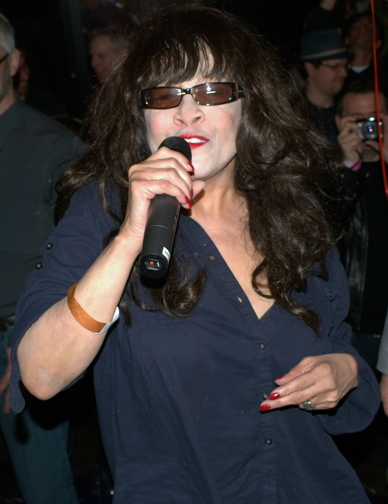

Be My Baby by the Ronettes is racking up fresh plays on TikTok in 2026.
A drum pattern older than most of the app's users keeps turning up in new video edits.
The clips are new, but the 1963 recording underneath them hasn't changed at all.

Table of Contents
How Be My Baby Was Recorded
Jeff Barry, Ellie Greenwich, and Phil Spector wrote the song together.
Philles Records released it in August 1963 as the Ronettes' debut single on the label.
Spector produced the track at Gold Star Studios in Hollywood on July 29, 1963.
Jack Nitzsche arranged it, and Larry Levine ran the session as engineer.
The Accidental Drum Intro
Drummer Hal Blaine played the now-famous opening beat that day.
He later said it came from an accident, a dropped stick that turned into a pattern.
Session players later grouped together as the Wrecking Crew filled out the track.
Ronnie Spector, then Veronica Bennett and the only Ronette on the recording, cut her lead vocal after three days of preparation.
Spector reportedly ran the band through roughly 40 takes before settling on the final version.
Chart Success and Legacy
The single became the biggest hit of the Ronettes' career.
It climbed high in the US, Canada, and the UK within weeks of release.
| Chart | Peak Position | Year |
|---|---|---|
| Billboard Hot 100 (US) | No. 2 | 1963 |
| CHUM Chart (Canada) | No. 2 | 1963 |
| Record Retailer (UK) | No. 4 | 1963 |
Brian Wilson called it the greatest pop record ever made.
He said he played it over a thousand times while working on his own Beach Boys arrangements.
The Library of Congress added the recording to the National Recording Registry in 2006.
The song has also opened two well-known films:
- Mean Streets (1973)
- Dirty Dancing (1987)
Why It's Trending on TikTok Now
A wider wave of 1960s recordings is resurfacing on TikTok this year.
This song is part of that wave, alongside other early 60s girl-group hits.
The audio TikTokers are using is the genuine 1963 recording, not a remake or cover.
One example is a video posted by the account Take2Tunes, tagged #theronettes and #bemybaby.
Clips like that keep pulling a six-decade-old recording in front of new listeners.
Hal Blaine's drum intro still works as an instant hook, long after he first played it.
FAQ
Who wrote the song?
Jeff Barry, Ellie Greenwich, and Phil Spector wrote it.
Spector also produced the record at Gold Star Studios in 1963.
How did it do on the charts?
It reached number 2 on the Billboard Hot 100 in the US and number 2 in Canada.
It peaked at number 4 in the UK.
Why does the drum intro sound the way it does?
Drummer Hal Blaine later said the pattern came from an accident.
He dropped a stick during a rehearsal and kept the resulting beat.
Does the whole group sing on the record?
No, Ronnie Spector, then Veronica Bennett, is the only Ronette heard on the actual recording.
Has it been used in any movies?
Yes, it opens both Mean Streets in 1973 and Dirty Dancing in 1987.
Why is it trending on TikTok now?
It's part of a wider wave of 1960s recordings resurfacing on the app.
TikTokers are using the genuine 1963 recording, not a remake or cover.
This one joins the rest of the Trending section, where 1960s songs having a moment right now land.
It also fits right into the site's Pop and Brill Building hub, home to the girl-group sound this single helped define.
For a wider taste of the decade, try the 1960s music personality quiz or the 1960s trivia game.
Back to the 1960smusic.net homepage to explore more of the era that gave the world Be My Baby.